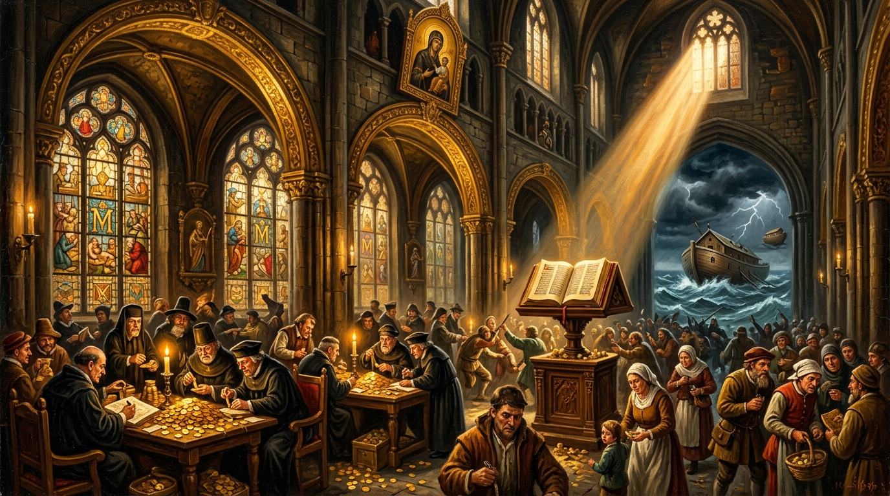

Chapter One: The Gospel According to Common Sense
A Mock-Biblical Apocrypha of Usury, Call-Centre Apostles, the Bureaucratic Refugee Ark, and the Divine Cosmic Jest.

“Lo! Did ye not know I was joking? Why take ye it all so seriously? See ye not the absurdity of existence, the futility of owning land which outlasts all men? ... Verily I say unto thee: let no man, woman, or IT add nor subtract from my most holy gospel, lest I kick thy ass into orbit.” — Trevor Swistchew
The Exegetical Codex • The Modern Apocrypha
Satirical Deconstruction of Usury, Border Bureaucracy & Inward ClarityFrom Ancient Usury to the High Altar of 29% APR
In the beginning was the Word, and the Word was trademarked.
The faithful gathered, not for salvation, but for the sale.
Every miracle came with a receipt, every blessing with a surcharge.
And lo, the shepherds discovered that sheep are most profitable when fleeced.
“Brothers and sisters,” cries the preacher, “give until it hurts!”
And the congregation, obedient as ever, replies:
“We are already in pain, but here’s our wallet anyway.”
Thus was born the sacred cycle:
Hypocrisy dressed in robes,
Greed disguised as grace,
And laughter — blessed laughter — the only true resurrection.
And it came to pass thet the great God KASH set upon humanity his Temples men knew as BANKS an lo the money changers did gather all the money unto themselves and men were forced by hunger thereof to learn Mugging and Robbing to feed their families and women on the side.
And verily, the priests of Profit did anoint themselves with gold,
declaring poverty a sin and interest a virtue.
The Temples rang not with hymns but with the clatter of coins,
and the faithful were measured not by spirit, but by credit score.
Lo, the hungry learned new commandments:
Thou shalt hustle, thou shalt scam, thou shalt survive.
And the weary bowed before the altar of Debt,
where forgiveness was never granted, save at 29% APR.
Thus did the Gospel of KASH spread across the nations,
and laughter became the only rebellion left to the poor.
And in the land of India, in a city called Kollect,
there arose The Cutter, who did send forth "Kevin Smith,"
a Sikh call-centre prophet of PIN numbers.
He preached unto the widows and the weary:
“Give me thy digits, and I shall multiply thy blessings!”
But lo, one elder, wise in suspicion,
spake: “Kevin is no name of the Indus!”
Then did she summon the Roman Guard,
and Kevin was rendered unto Caesar,
who booted him to the Crucifier,
and seized all shekels of deceit.
And when the nails were hammered in,
the heavens opened, and a Voice thundered:
“Render unto the Almighty that which He created
long before greedy man had invented PINS and Profit.”
And in the land of Noah did a whale
cross a thousand miles of desert to swallow Jonah,
before the Red Flood Warning was sounded.
Noah, weary yet resolute, built he a boat called THE ARK,
and filled it with two of every beast of Earth,
though Customs declared him an ILLEGAL IMMIGRANT,
and small men with red-cross flags did shout:
“Go home! Stop marrying our women! Stop taking our jobs!”
Though many of them had no jobs to surrender,
save the Holy Welfare they worshipped in silence.
Then the world, by UPS delivery, surrendered its animals two by two,
and the Ark was loaded without toilet provision, without telephone,
and drifted upon the waters for many weeks.
At last a dove of peace was seen flying eastward,
and Noah followed, landing near a mount in Turkiye,
where police did arrest him as an uninvited incomer,
accused of converting the folk to a foreign faith.
Thus was the Ark not a vessel of salvation,
but a refugee boat, battered by bureaucracy,
mocked by hypocrisy, and sanctified only by laughter.
Then came at last the Revelation:
that God the Father — HE, HIM, IT —
no longer claimed any gender,
but spoke unto the mass huddled upon Earth:
“Lo! Did ye not know I was joking?
Why take ye it all so seriously?
See ye not the absurdity of existence,
the futility of owning land
which outlasts all men?Why follow phoney gurus,
why read books on how to get CLEAR,
when clarity has dwelt in you
since birth and before?Verily I say unto thee:
let no man, woman, or IT
add nor subtract from my most holy gospel,
lest I kick thy ass into orbit.”